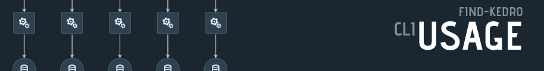

¶The cli provides a handy interface to search your project for nodes. It is primarily useful for debugging. Running the cli with --verbose will list out each module and variable picked up
// run help
$ kedro --help
Usage: find-kedro [OPTIONS]
Options:
--file-patterns TEXT glob-style file patterns for Python node module
discovery
--patterns TEXT prefixes or glob names for Python pipeline, node,
or list object discovery
-d, --directory DIRECTORY Path to save the static site to
--version Prints version and exits
-v, --verbose Prints extra information for debugging
--help Show this message and exit.
get the latest version¶
// run find-kedro --version
$ find-kedro --version
0.0.1
Example ran with a slightly modified default kedro new project.
// run find-kedro
$ find-kedro
{
"__default__": [
"create_int_iris",
],
"pipelines.data_engineering.pipeline": [
"create_int_iris",
],
Verbose Examples¶
running find-kedro -d src -v inside of a slightly modified default template will yield the following.
$ find-kedro -d src -v
python version: 3.7.7 (default, Mar 26 2020, 15:48:22)
[GCC 7.3.0]
current directory: /mnt/c/temp/test_project_template/default-kedro-159
find nodes recieved the following input
file_patterns: ('*node*', '*pipeline*')
patterns: ('*node*', '*pipeline*')
directory: src
version: 0.0.3
verbose: True
―――――― FIND KEDRO START ――――――
――――――――――――――――――――――――――――――
raw inputs
file_patterns: ('*node*', '*pipeline*')
patterns: ('*node*', '*pipeline*')
――――――――――――――――――――――――――――――
cleansed inputs
file_patterns: ['**/*node*.py', '**/*pipeline*.py']
patterns: ['*node*', '*pipeline*']
――――――――――――――――――――――――――――――
pattern matched modules
num_modules_found: 5
directory: src
files_found: ['default_kedro_159/pipelines/data_science/nodes.py', 'default_kedro_159/pipelines/data_engineering/pipeline.py', 'default_kedro_159/pipelines/data_engineering/nodes.py', 'default_kedro_159/pipeline.py', 'default_kedro_159/pipelines/data_science/pipeline.py']
――――――――――――――――――――――――――――――
modules found with file pattern match
modules: {'default_kedro_159.pipelines.data_science.nodes': <module 'nodes.py' from 'default_kedro_159/pipelines/data_science/nodes.py'>, 'default_kedro_159.pipelines.data_engineering.pipeline': <module 'default_kedro_159.pipelines.data_engineering.pipeline' from '/mnt/c/temp/test_project_template/default-kedro-159/src/default_kedro_159/pipelines/data_engineering/pipeline.py'>, 'default_kedro_159.pipelines.data_engineering.nodes': <module 'nodes.py' from 'default_kedro_159/pipelines/data_engineering/nodes.py'>, 'default_kedro_159.pipeline': <module 'pipeline.py' from 'default_kedro_159/pipeline.py'>, 'default_kedro_159.pipelines.data_science.pipeline': <module 'default_kedro_159.pipelines.data_science.pipeline' from '/mnt/c/temp/test_project_template/default-kedro-159/src/default_kedro_159/pipelines/data_science/pipeline.py'>}
――――――――――――――――――――――――――――――
module found with nodes pattern match
nodes: {'default_kedro_159.pipelines.data_engineering.pipeline': [Node(split_data, ['example_iris_data', 'params:example_test_data_ratio'], {'train_x': 'example_train_x', 'train_y': 'example_train_y', 'test_x': 'example_test_x', 'test_y': 'example_test_y'}, None)],
'default_kedro_159.pipelines.data_science.pipeline': [Node(report_accuracy, ['example_predictions', 'example_test_y'], None, None), Node(train_model, ['example_train_x', 'example_train_y', 'parameters'], 'example_model', None), Node(predict, {'model': 'example_model', 'test_x': 'example_test_x'}, 'example_predictions', None)]}
――――――――――――――――――――――――――――――
generated pipelines
pipelines: {'default_kedro_159.pipelines.data_engineering.pipeline': Pipeline([
Node(split_data, ['example_iris_data', 'params:example_test_data_ratio'], {'train_x': 'example_train_x', 'train_y': 'example_train_y', 'test_x': 'example_test_x', 'test_y': 'example_test_y'}, None)
]), 'default_kedro_159.pipelines.data_science.pipeline': Pipeline([
Node(train_model, ['example_train_x', 'example_train_y', 'parameters'], 'example_model', None),
Node(predict, {'model': 'example_model', 'test_x': 'example_test_x'}, 'example_predictions', None),
Node(report_accuracy, ['example_predictions', 'example_test_y'], None, None)
]), '__default__': Pipeline([
Node(split_data, ['example_iris_data', 'params:example_test_data_ratio'], {'train_x': 'example_train_x', 'train_y': 'example_train_y', 'test_x': 'example_test_x', 'test_y': 'example_test_y'}, None),
Node(train_model, ['example_train_x', 'example_train_y', 'parameters'], 'example_model', None),
Node(predict, {'model': 'example_model', 'test_x': 'example_test_x'}, 'example_predictions', None),
Node(report_accuracy, ['example_predictions', 'example_test_y'], None, None)
])}
―――――― FIND KEDRO END ――――――
{
"__default__": [
"split_data([example_iris_data,params:example_test_data_ratio]) -> [example_test_x,example_test_y,example_train_x,example_train_y]",
"train_model([example_train_x,example_train_y,parameters]) -> [example_model]",
"predict([example_model,example_test_x]) -> [example_predictions]",
"report_accuracy([example_predictions,example_test_y]) -> None"
],
"default_kedro_159.pipelines.data_engineering.pipeline": [
"split_data([example_iris_data,params:example_test_data_ratio]) -> [example_test_x,example_test_y,example_train_x,example_train_y]"
],
"default_kedro_159.pipelines.data_science.pipeline": [
"train_model([example_train_x,example_train_y,parameters]) -> [example_model]",
"predict([example_model,example_test_x]) -> [example_predictions]",
"report_accuracy([example_predictions,example_test_y]) -> None"
]
}